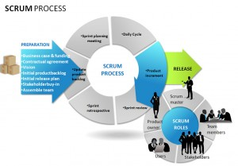

El conocimiento profundo de un lenguaje de programación parte no sólo del entendimiento de su léxico, de su sintaxis y de su semántica, sino que además requiere la comprensión de los objetivos que motivaron su desarrollo. Así pues, en esta unidad se repasa la historia del lenguaje de programación C desde el prisma de la programación de los computadores. Los programas descritos en un lenguaje de programación como C no pueden ser ejecutados directamente por ninguna máquina. Por tanto, es necesario disponer de herramientas (es decir, programas) que permitan obtener otros programas que estén descritos como una secuencia de órdenes que sí que pueda ejecutar directamente algún computador. En este sentido, se describirá un entorno de desarrollo de software de libre acceso disponible tanto en plataformas Microsoft como GNU/Linux. Dado que las primeras requieren de un sistema operativo que no se basa en el software libre, la explicación se centrará en las segundas.
Scrum como metodología simplifica el desarrollo y la interacción con el cliente o usuario final al tener ciclos cortos de entrega de pequeñas funciones del software en general.
Scrum define varios conceptos para el manejo de su metodología de los cuales definiremos los mas importantes a continuación:
- Sprint. El corazón de esta metodología donde cerramos ciclos de 2 a 4 semanas normalmente, en este ciclo, hay tareas planeadas para su desarrollo y entrega en este corto periodo de tal manera que al final de cada ciclo existe una entrega de una pequeña parte y el cliente esta siempre viendo avances.
- Backlog. Es la lista de tareas que tenemos planeadas para el ciclo completo del desarrollo del software, la clave esta en desacoplar cada una de las tareas en su mas mínima expresión.
- Scrum Master. Es la persona que esta encargada del equipo de desarrollo, planear tareas y llevar su revisión diaria, podría verse como el Administrador del Proyecto que a su vez esta en contante comunicación con los clientes (StakeHolders)
- Standup Meeting. Otro punto importante de esta metodología es el uso de juntas diarias muy cortas (10 -15 min) donde cada miembro del equipo comparte que hizo el día anterior, que hará el día actual y si hay algún problema que lo este deteniendo
El ciclo comienza haciéndose una planeacion de las tareas que pueden ser capaces de tener listas dentro de las 2 a 4 semanas que dura el sprint. En este ciclo el desarrollo debe de ser completo, incluye la programación del código la fase de pruebas, y finalmente la entrega del paquete nuevo al cliente. El numero de ciclos dependerá que tan grande sea nuestro backlog, es decir que tantas tareas hay por hacer en el paquete de software que tenemos que entregar. Uno de los puntos preferidos por los clientes es que la metodología permite que el cliente pueda hacer cambios al software en medio de su desarrollo, este es un punto importante ya que las empresas actuales están en constante cambio y sus procesos cambian día a día.
El término ciclo de vida del software describe el desarrollo de software, desde la fase inicial hasta la fase final. El propósito de este programa es definir las distintas fases intermedias que se requieren para validar el desarrollo de la aplicación, es decir, para garantizar que el software cumpla los requisitos para la aplicación y verificación de los procedimientos de desarrollo: se asegura de que los métodos utilizados son apropiados.
Estos programas se originan en el hecho de que es muy costoso rectificar los errores que se detectan tarde dentro de la fase de implementación. El ciclo de vida permite que los errores se detecten lo antes posible y por lo tanto, permite a los desarrolladores concentrarse en la calidad del software, en los plazos de implementación y en los costos asociados.
El ciclo de vida básico de un software consta de los siguientes procedimientos:
- Definición de objetivos: definir el resultado del proyecto y su papel en la estrategia global.
- Análisis de los requisitos y su viabilidad: recopilar, examinar y formular los requisitos del cliente y examinar cualquier restricción que se pueda aplicar.
- Diseño general: requisitos generales de la arquitectura de la aplicación.
- Diseño en detalle: definición precisa de cada subconjunto de la aplicación.
- Programación (programación e implementación): es la implementación de un lenguaje de programación para crear las funciones definidas durante la etapa de diseño.
- Prueba de unidad: prueba individual de cada subconjunto de la aplicación para garantizar que se implementaron de acuerdo con las especificaciones.
- Integración: para garantizar que los diferentes módulos se integren con la aplicación. Éste es el propósito de la prueba de integración que está cuidadosamente documentada.
- Prueba beta (o validación), para garantizar que el software cumple con las especificaciones originales.
- Documentación: sirve para documentar información necesaria para los usuarios del software y para desarrollos futuros.
- Implementación
- Mantenimiento: para todos los procedimientos correctivos (mantenimiento correctivo) y las actualizaciones secundarias del software (mantenimiento continuo).